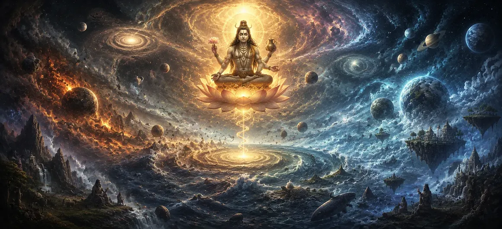

आदिकालीन रचना
उमा संहिता के अध्याय 28, अध्याय 29 में छाया स्व के जटिल दैहिक निदान से परिवर्तन हमारी दृष्टि को सबसे भव्य ब्रह्मांडीय क्षितिज तक विस्तारित करता है। आदिकालीन रचना. व्यक्तिगत शरीर रचना विज्ञान से सार्वभौमिक उत्पत्ति की ओर बढ़ते हुए, शास्त्र बताता है कि दिव्य इच्छा और मौलिक ऊर्जा की सक्रियता के माध्यम से भगवान शिव की अव्यक्त, सर्वोच्च चेतना से विविध ब्रह्मांड कैसे उभरता है।
यह अध्याय ब्रह्मांडीय उद्भव के गहन आध्यात्मिक चरणों की पड़ताल करता है, जिसमें पूर्ण शांति से दुनिया, तत्वों और जीवित प्राणियों की गतिशील अभिव्यक्ति तक की यात्रा का वर्णन किया गया है।
इस पाठ में मुख्य विषय (11 स्तंभ)
- 01 अव्यक्त अवस्था और सर्वोच्च मौलिक वास्तविकता →
- 02 सृजन के लिए दिव्य इच्छा का जागरण (संकल्प)। →
- 03 आदिम शक्ति और ब्रह्मांडीय ऊर्जा का उद्भव →
- 04 ब्रह्मांडीय सिद्धांतों (तत्वों) का प्रकटीकरण →
- 05 लौकिक बुद्धि (महत्) और अहंकार (अहंकार) की अभिव्यक्ति →
- 06 सूक्ष्म तत्वों (तन्मात्राओं) और संवेदी क्षमताओं की उत्पत्ति →
- 07 पाँच स्थूल तत्वों (पंच महाभूतों) का निर्माण →
- 08 प्राइमर्डियल कॉस्मिक एग (हिरण्यगर्भ) और लोकों का निर्माण →
- 09 सार्वभौम विकास में तीन गुणों की परस्पर क्रिया →
- 10 भगवान शिव समस्त सृष्टि के शाश्वत आधार हैं →
- 11 आदिम सृष्टि से सृष्टि के विवरण तक परिवर्तन →
1. अव्यक्त अवस्था और सर्वोच्च मौलिक वास्तविकता
यह प्रारंभिक खंड समय और स्थान से पहले अस्तित्व की आधार रेखा स्थापित करता है, जहां सर्वोच्च चेतना परिवर्तन से अछूती, अव्यक्त, पूर्ण शांति में अकेली मौजूद होती है।
उमा संहिता साधकों को याद दिलाती है कि सृष्टि से पहले, केवल शिव का अनंत सार था।
2. सृजन के लिए दिव्य इच्छा का जागरण (संकल्प)।
पाठ बताता है कि कैसे सर्वोच्च वास्तविकता ने बहुगुणित होने के इरादे से हलचल मचाई, जिससे मौलिक ब्रह्मांडीय व्यवस्था उत्पन्न हुआ: "मैं एक हूं, क्या मैं अनेक हो सकता हूं" (एकोहम बहुस्याम)।
इच्छाशक्ति की यह एकल नाड़ी संपूर्ण ब्रह्मांडीय चक्र की शुरुआत करती है।
3. आदिम शक्ति और ब्रह्मांडीय ऊर्जा का उद्भव
शिव की अव्यक्त चेतना से उनकी अविभाज्य शक्ति, शक्ति उत्पन्न होती है, जो सभी ब्रह्मांडीय रूपों और अभिव्यक्तियों के गतिशील उत्प्रेरक और सक्रिय वास्तुकार के रूप में कार्य करती है।
शिव और शक्ति ब्रह्मांड का ताना-बाना बुनने के लिए एकजुट होते हैं।
4. ब्रह्मांडीय सिद्धांतों (तत्वों) का प्रकटीकरण
उमा संहिता मूलभूत तत्वों के माध्यम से वास्तविकता के व्यवस्थित वंश की रूपरेखा बताती है, जिसमें बताया गया है कि कैसे शुद्ध चेतना सूक्ष्म ऊर्जावान और मानसिक श्रेणियों में भिन्न होती है।
प्रत्येक चरण ब्रह्मांडीय संरचना की एक सघन परत का प्रतिनिधित्व करता है।
5. लौकिक बुद्धि (महत्) और अहंकार (अहंकार) की अभिव्यक्ति
पाठ में महत (ब्रह्मांडीय बुद्धि) और अहंकार (व्यक्तित्व का सिद्धांत) के उद्भव का विवरण दिया गया है, जो व्यक्तिपरक जागरूकता और ब्रह्मांडीय व्यवस्था के लिए रूपरेखा प्रदान करता है।
ये सिद्धांत ब्रह्मांड को स्वयं को समझने और व्यवस्थित करने की अनुमति देते हैं।
6. सूक्ष्म तत्वों (तन्मात्राओं) और संवेदी क्षमताओं की उत्पत्ति
उमा संहिता बताती है कि कैसे ध्वनि, स्पर्श, रूप, स्वाद और गंध की सूक्ष्म क्षमताएं धारणा के संबंधित संवेदी और मोटर अंगों के साथ उभरती हैं।
संवेदी अनुभव सीधे ब्रह्मांडीय खाके में बुना गया है।
7. पाँच स्थूल तत्वों (पंच महाभूतों) का निर्माण
शास्त्र में सूक्ष्म तत्वों के संयोजन से ईथर, वायु, अग्नि, जल और पृथ्वी - पांच भौतिक निर्माण खंड जो भौतिक ब्रह्मांड का निर्माण करते हैं, का वर्णन किया गया है।
इस तात्विक संलयन के माध्यम से भौतिक तल मूर्त रूप लेता है।
8. आदिम ब्रह्मांडीय अंडा (हिरण्यगर्भ) और लोकों का निर्माण
उमा संहिता सुनहरे ब्रह्मांडीय अंडे (हिरण्यगर्भ) के गठन का वर्णन करती है, जिसमें से सभी चौदह लोक (अस्तित्व के क्षेत्र) और ब्रह्मांडीय देवता पूर्ण अभिव्यक्ति में उभरते हैं।
इस प्रकार बहुस्तरीय ब्रह्माण्ड ईश्वरीय व्यवस्था के अंतर्गत स्थापित है।
9. सार्वभौमिक विकास में तीन गुणों की परस्पर क्रिया
पाठ बताता है कि कैसे सत्व, रजस और तमस प्रत्येक वस्तु और सृष्टि के भीतर चल रहे विकास, रखरखाव और परिवर्तन को संचालित करने के लिए परस्पर क्रिया करते हैं।
ये तीन गुण प्रकृति के सार्वभौमिक तंत्र का निर्माण करते हैं।
10. भगवान शिव समस्त सृष्टि के शाश्वत आधार हैं
उमा संहिता साधकों को याद दिलाती है कि सृष्टि की विशालता के बावजूद, भगवान शिव ब्रह्मांडीय अभिव्यक्ति की हर परत का समर्थन करने वाले उत्कृष्ट, अपरिवर्तनीय आधार बने हुए हैं।
उनकी सर्वोच्च चेतना के अलावा कुछ भी अस्तित्व में नहीं है।
11. आदिम सृष्टि से सृष्टि के विवरण तक परिवर्तन
आदिम उत्पत्ति की भव्य नींव स्थापित करने के बाद, उमा संहिता अगली रचना के विवरण में ब्रह्मांडीय विकास के विशिष्ट संरचनात्मक टूटने की जांच करने के लिए तैयार है।
यह परिवर्तन सिद्धांतों की उत्पत्ति से सार्वभौमिक दुनिया की विस्तृत वास्तुकला की ओर बढ़ता है।
आध्यात्मिक अंतर्दृष्टि
अध्याय 29 हमें ग्यारह मूलभूत स्तंभों के माध्यम से सिखाता है कि ब्रह्मांड यादृच्छिक नहीं है, बल्कि भगवान शिव और शक्ति से जानबूझकर निकला है। ब्रह्मांडीय उत्पत्ति को समझकर, साधक सभी चीजों में मौजूद दिव्य चिंगारी को पहचानते हैं।
अक्सर पूछे जाने वाले प्रश्न
① उमा संहिता में अध्याय 29 का केंद्रीय विषय क्या है?
अध्याय भव्य ब्रह्मांडीय उत्पत्ति की पड़ताल करता है, जिसमें विस्तार से बताया गया है कि ब्रह्मांड भगवान शिव की सर्वोच्च चेतना और इच्छा से कैसे उत्पन्न होता है।
② इस पौराणिक कथा के अनुसार सृष्टि का आरंभ कैसे होता है?
सृष्टि अव्यक्त सर्वोच्च अवस्था से सूक्ष्म ब्रह्मांडीय सिद्धांतों, तत्वों और दैवीय ऊर्जाओं के परस्पर क्रिया में प्रकट होती है।
③ उमा संहिता की प्रगति में इस अध्याय के बाद क्या आता है?
आदिम उत्पत्ति की भव्य नींव स्थापित करने के बाद, पाठ सृजन के विवरण में विस्तृत संरचनात्मक टूटने में परिवर्तित हो जाता है।